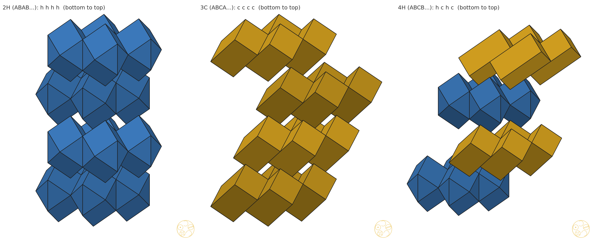
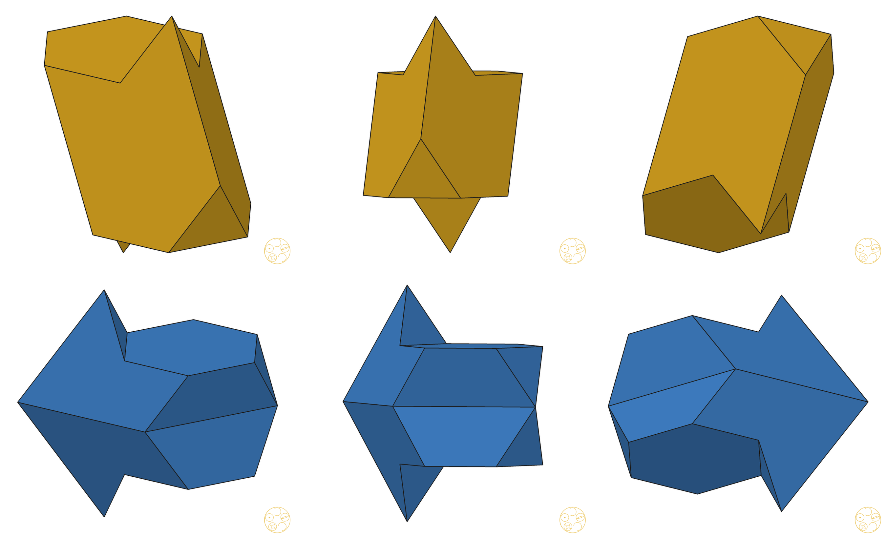
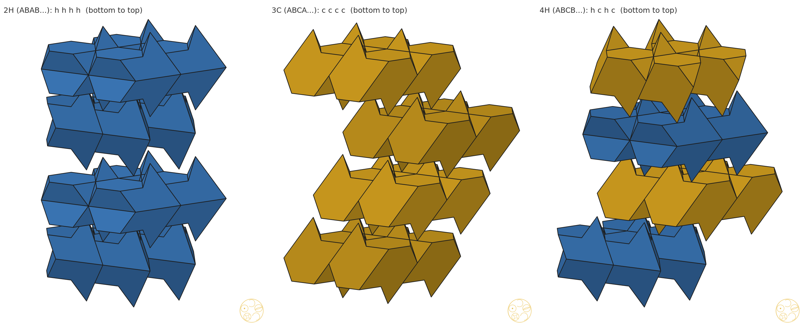
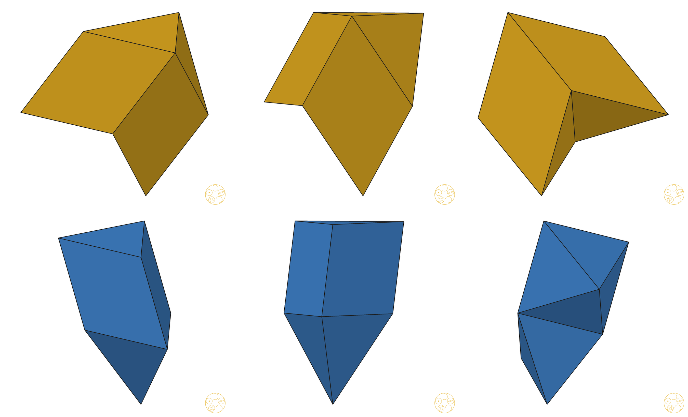
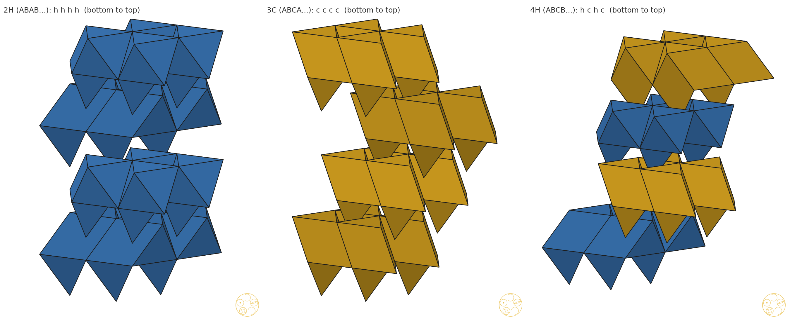
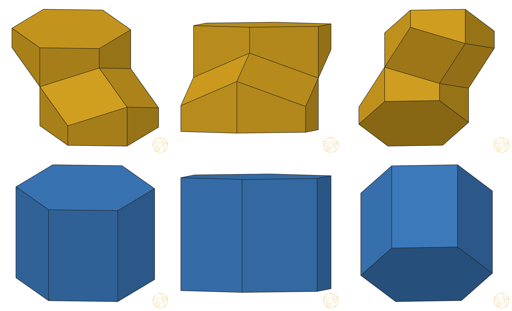
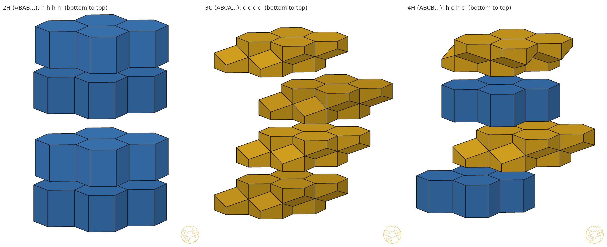
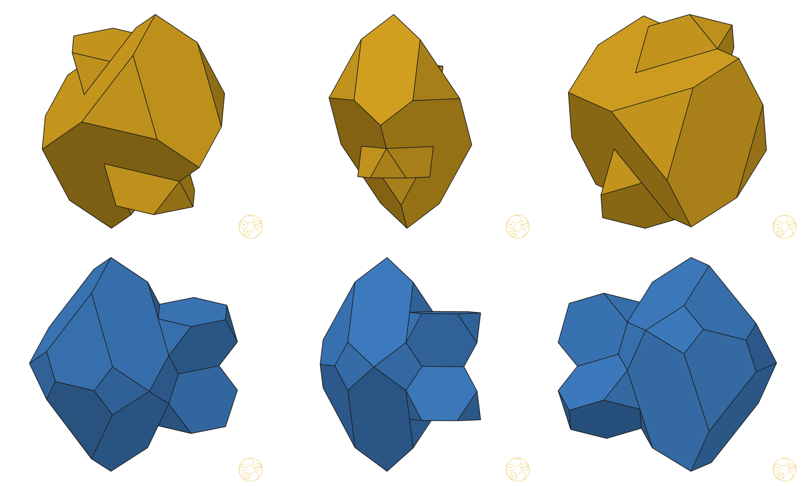
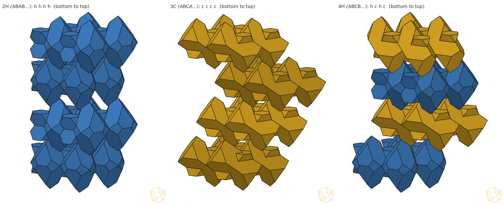

Moving the pieces of each HexOct tile within its layer, so that the c-tile and the h-tile are each one solid
A layer of HexOct is filled by copies of one tile, side by side. Each tile is four pieces. If you take one piece from every tile and slide each one over by the same step along the layer, the layer is filled exactly as before. Only the grouping of the pieces into tiles changes.
For each tile type, piece 0 stays put and pieces 1–3 each take a lattice shift (a, b) with −2 ≤ a, b ≤ 2, which gives 25³ = 15 625 choices (25 at the ends of the walk, where the tile has 2 pieces). A choice is kept if the pieces are joined by face contacts of positive area, so the union has a connected interior. The surface is also checked: every side must be used by exactly two faces, so there are no edge or point pinches. Choices that give congruent tiles (12 lattice symmetries, z kept or flipped, any shift) are merged. Coplanar faces are merged before faces are counted. All of this is exact, in rational lattice coordinates.
The shift does not change which pieces a layer holds, so the stacked tiles still fill space. Every c-layer gets the same shift through the one motion that carries it onto the reference c-tile (#75), and likewise for h. So c sits on c, c on h, h on c and h on h exactly as before.
| λ | c: joined choices | c faces | c hull ratio | h faces | h hull ratio | neck (unit triangles) |
|---|---|---|---|---|---|---|
| −11/24 (end) | 3/25 | 18 | 0.783 | 8 (hexagonal prism) | 1 (convex) | 0.82 / – |
| −5/12, −3/8 | 3/25 | 18 | 0.783 | 16 | 0.97, 0.95 | 0.82 / 0.03, 0.13 |
| −1/3 | 27/15625 | 26 | 0.785 | 16 | 0.923 | 0.06 / 0.28 |
| −7/24 (flat / interlock) | 27/15625 | 26 | 0.794 | 16 | 0.900 | 0.22 / 0.50 |
| −1/4, −3/16 | 27/15625 | 34 | 0.76, 0.74 | 24 | 0.81, 0.74 | 0.48–1.13 |
| −1/8 (ring build) | 15/15625 | 10 | 0.800 | 14 | 0.735 | 1.50 / 1.50 |
| −1/16, 0, 1/10 (#75), 1/8 | 27/15625 | 24 | 0.73–0.76 | 30 | 0.74–0.79 | 0.44–1.34 |
| 5/24, 1/4, 1/3 | 27/15625 | 24 | 0.81–0.95 | 30 | 0.84–0.95 | 0.19 → 0.01 |
| 3/8 (end) | 3/25 | 6 (brick) | 1 (convex) | 12 (twisted cube) | 1 (convex) | – |
The hull ratio is the tile's volume divided by the volume of its convex hull, so 1 means convex. The neck is the smallest total contact area across any split of the tile into two groups of pieces, in unit triangles (√3/4). The c-tile was joined at every weight; the h-tile was already one solid. At every weight the best c-choice is the same: one of the two towers of #75 (an octahedral half with its tetrahedral part) is shifted one lattice step, so that the towers meet along faces instead of at the ball. Exact convexity was confirmed for the 3/8 pair and the −11/24 h-tile: every merged face is a facet of the convex hull. Only the two ends of the walk give convex tiles. The neck shrinks to almost nothing near 1/3 and near −5/12, so those weights are poor choices.
| pair | λ | split | c faces | h faces | convex | fill check (all 42 stackings, period ≤ 6) |
|---|---|---|---|---|---|---|
| A · HexOct II | 3/8 | Rule of Halves | 6 | 12 | both | 42 words, 216 layers, 7 472 piece pairs: 0 overlaps |
| B | −1/8 | whole octahedra (§5) | 8 | 10 | no (0.857, 0.857) | 6 480 pairs: 0 overlaps |
| C | −1/8 | Rule of Halves | 10 | 14 | no (0.800, 0.735) | 11 232 pairs: 0 overlaps |
| D | −11/24 | Rule of Halves | 18 | 8 | h only | 4 080 pairs: 0 overlaps |
| E | 1/10 (#75) | Rule of Halves | 24 | 30 | no (0.745, 0.778) | 13 520 pairs: 0 overlaps |
The fill check is independent of the #75 census. For each stacking and each layer, every piece is matched to exactly one engine piece up to an in-layer lattice shift. Every tile has the volume of one layer cell. Every piece is tested against every piece of every other tile copy nearby (layers L−2 … L+2, in-layer copies −3 … 3), and a separating plane must be found exactly. Disjoint tiles that each have one cell's volume fill space.
The twisted cube is two cube corners, each made of three squares (around the top and bottom corners), joined by a band of six triangles. Each tile has two pieces (the tetrahedral parts; at 3/8 the octahedral halves have shrunk to nothing). Volume: one layer cell, 1/√2 (ball spacing 1).









A two-tile system needs each layer's tile to depend on that layer's letter alone. We checked exactly, for every gap in words that cover all contexts, which layer's letter fixes the shape of each whole piece (at λ = −1/3, −1/8, 1/10, 1/4). At −1/3, 1/10 and 1/4, the whole octahedral piece takes 3 shapes and depends on both neighbouring layers. Each tetrahedral piece depends on the layer of its base. So the Rule of Halves is the only split of whole pieces and mid-plane halves that gives two layer tiles there, and the move of §1 is the only freedom left. At λ = −1/8 every piece has one shape (regular tetrahedra and octahedra), and two more splits are possible:
Cut planes other than the mid-plane were not tried.
Library (ask-library, 1 query: "convex space-filling polyhedron with six squares and six triangles, twisted cube, hexagonal close packing"): hits Kerckhoff–Storm 2008, Zong 2012, Fang et al. 2013, Sommerville 1922, Torquato–Jiao 2009, Kramer 1982 (catalogue); Wikipedia "Tetrahedral-octahedral honeycomb" p.1, Koskinen 2011 p.2, Krishnamurthy–Akleman–Subramanian 2020 p.3, Fedorov 1885 ch. 13 notes. None shows the twisted cube. Web (1 query, same words): Wikipedia "Space-filling polyhedron" and "Honeycomb (geometry)", MathWorld "Space-Filling Polyhedra" topic page, close-packing teaching pages; no match. The two-cube brick and the 60° rhombohedron are classical. The twisted cube as a convex tile of hcp-type layers was not found in these sources. It is not claimed as new until a fuller check.
Conclusion: shifting one tower of the c-tile by one lattice step makes it one solid at every weight. At λ = 3/8 both tiles are convex (a brick of two cubes and the twisted cube), and this pair is recommended as HexOct II (placeholder name). Status: exact enumeration done over 16 weights; exact fill check over all 42 stackings of period ≤ 6 for the five pairs; awaiting DICTO's read and name.